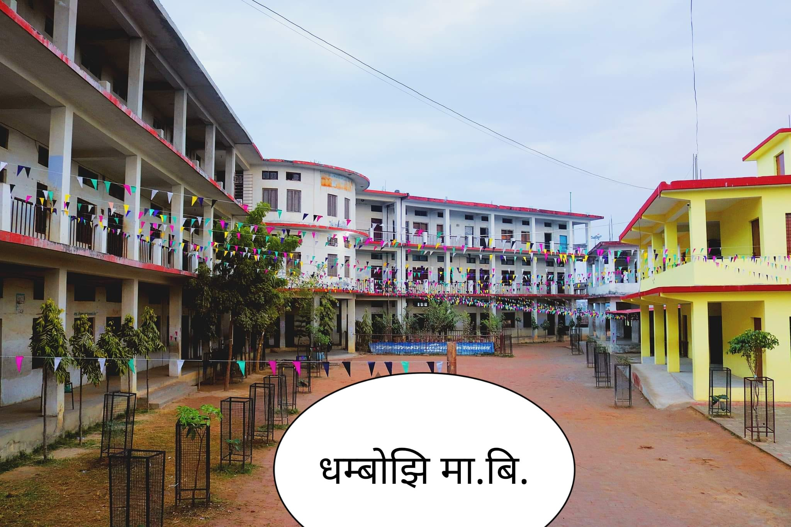
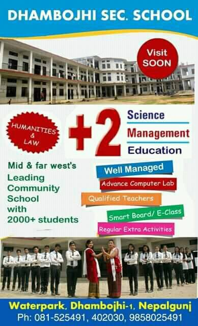

Overview
Established in 1957 AD (2014 B.S), Dhambojhi Secondary School is a community-based academic institute located in Nepalgunj-1, Dhambojhi, Waterpark, Nepalgunj, Banke district of Nepal. The school was initiated by well-known academic personalities and is affiliated to the National Examinations Board (NEB) while being approved by the Ministry of Education. With a strong emphasis on excellent education, Dhambojhi Secondary School offers Ten Plus Two (10+2) programs in Science, Management, Education, and Computer Engineering streams.
Affordable Fees and Scholarships:
Dhambojhi Secondary School, Nepalgunj, Banke is committed to providing Ten Plus Two level education at affordable fee structures. In addition, the school also offers scholarships to deserving, hard-working, and economically disadvantaged students. This ensures that students from various backgrounds have access to quality education without financial burdens.
State-of-the-Art Facilities:
Dhambojhi Secondary School strives to create a conducive learning environment by providing a range of facilities. The school boasts a cafeteria, sports facilities, a library, science labs, transportation services, computer labs, smart classrooms, an e-library, educational tours, multimedia resources, a journal, parking, an auditorium, counseling services, and conference facilities. These facilities enhance the overall educational experience for the students, making learning engaging and comprehensive.
Admission Process and Increasing Popularity
To secure admission at Dhambojhi Secondary School, Nepalgunj, Banke, students are required to participate in an entrance examination. Due to the school's growing popularity, this year's admission program was closed early as the school couldn't accommodate the high number of applicants. The school has been witnessing an increasing trend of students transitioning from private schools to enroll at Dhambojhi Secondary School. Around 40 percent of the students who leave private schools opt for this institution.
Student Enrollment and Academic Excellence
Dhambojhi Secondary School currently has a student population of 2,760, spanning from pre-development to class 12. Principal Vamdev Subedi revealed that the school has successfully managed the influx of students by organizing classes in five sections for classes 11 and 12. The school maintains statistical data, which indicates that 48 students are enrolled in the elementary school development, 230 students are studying in class 8, and there are 469 students in class 11. Unlike many public schools in Banke, Dhambojhi Secondary School has experienced a consistent flow of students, thanks to its reputation for academic excellence.
Welcoming Students from Beyond the District
Despite being a public school, Dhambojhi Secondary School has become a favored choice for students from private schools due to recent educational reforms. Not only do students from Nepalgunj and Banke choose this institution, but many students from districts outside the immediate vicinity also enroll at Dhambojhi Secondary School. This signifies the school's growing reputation and its ability to attract students seeking quality education.
The Rise to Prominence: Transforming from a Weak School to a District Leader
Dhambojhi Secondary School, which was previously considered a weak school in the district, has undergone a significant transformation. Through the dedication of its teaching staff and the support of parents, the school has emerged as the best public school in the district over the past decade. The curriculum at Dhambojhi Secondary School covers elementary school to class 12, with computer engineering being taught from class 9 to 12 under the technical stream. This expansion and improvement in the educational offerings have contributed to the school's rise to prominence.

Sailent Features:
Dhambojhi Secondary School, Nepalgunj, Banke offers a wide range of salient features and facilities to enhance the overall learning experience and personal development of its students. These features include:
- Cafeteria: The school has a well-equipped cafeteria that provides nutritious and hygienic meals for students and staff.
- Library: A spacious library is available, offering a diverse collection of books, reference materials, and digital resources to support students' academic pursuits and encourage a love for reading.
- Sports Facilities: The school promotes physical fitness and sportsmanship through its sports facilities, including playgrounds and sports equipment for various indoor and outdoor games.
- Internet Access: The availability of internet access ensures that students can engage in online research, access educational resources, and stay connected with the global community.
- Transportation: The school provides transportation facilities to ensure the safe and convenient commute of students from different areas to the school premises.
- Science Lab: The well-equipped science lab enables students to conduct hands-on experiments, fostering their scientific inquiry and practical understanding of scientific concepts.
- Computer Lab: The computer lab is equipped with modern technology and software, allowing students to develop essential computer skills and explore the world of information technology.
- Multimedia Facilities: The school incorporates multimedia facilities to facilitate interactive and engaging learning experiences through audiovisual aids and presentations.
- Journal: Students have access to a school journal that serves as a platform for showcasing their creative works, research projects, and literary contributions.
- Counseling: Trained counselors are available to provide guidance and support to students, addressing their academic, personal, and emotional needs.
- Scholarships: Dhambojhi Secondary School offers scholarships to deserving and academically excellent students, ensuring equal educational opportunities for all.
- Well-Equipped Classrooms: The school provides spacious and well-furnished classrooms, creating a conducive learning environment for students.
- Conference Hall: The conference hall facilitates various academic and extracurricular activities, including seminars, workshops, and meetings.
- Dance and Music: The school encourages students' artistic talents through dedicated spaces and opportunities for dance and music performances.
- Educational Tours: Regular educational tours and field trips are organized to enhance students' practical knowledge and provide exposure to real-world experiences.
- Extra-Curricular Activities (ECA): The school promotes a holistic approach to education by offering a range of extracurricular activities, such as clubs, sports teams, cultural events, and competitions.
These salient features of Dhambojhi Secondary School contribute to creating a well-rounded and enriching educational environment that supports the overall development of students.
Course Offered:
Ten Plus Two in Management:
The Ten Plus Two program in Management at Dhambojhi Secondary School is designed to provide students with a solid foundation in business and management principles. Over the course of two years, students will develop skills in areas such as accounting, economics, marketing, entrepreneurship, and organizational behavior. This program prepares students for future careers in various fields of business and equips them with the knowledge and skills necessary to pursue higher education in management-related disciplines.
Ten Plus Two in Science:
The Ten Plus Two program in Science at Dhambojhi Secondary School is aimed at students with a keen interest in the sciences. Through a comprehensive curriculum that includes subjects such as physics, chemistry, biology, mathematics, and computer science, students gain a deep understanding of scientific principles and develop critical thinking and analytical skills. This program lays a strong foundation for students pursuing careers in fields such as medicine, engineering, research, and other scientific disciplines.
Ten Plus Two in Education:
The Ten Plus Two program in Education at Dhambojhi Secondary School is ideal for students who aspire to become educators or work in the field of education. This program provides a comprehensive understanding of educational theories, teaching methodologies, child psychology, curriculum development, and classroom management. Students engage in practical teaching experiences and learn effective instructional strategies. Graduates of this program are well-prepared to pursue careers as teachers, education administrators, counselors, or pursue further studies in the field of education.
Ten Plus Two in Computer Engineering:
The Ten Plus Two program in Computer Engineering at Dhambojhi Secondary School caters to students interested in the field of technology and computer science. This program covers a wide range of subjects including programming languages, computer hardware, software development, networking, database management, and digital electronics. Students gain practical skills through hands-on projects and develop a strong foundation in computer engineering principles. Upon completion, students can pursue careers in software development, network administration, systems analysis, or further their education in the field of computer engineering or related disciplines.

Overall, Dhambojhi Secondary School stands as a symbol of quality education in Nepalgunj, Banke. With its affordable fees, scholarship opportunities, state-of-the-art facilities, and academic achievements, the school continues to shape the educational landscape and attract students seeking a rewarding learning experience.